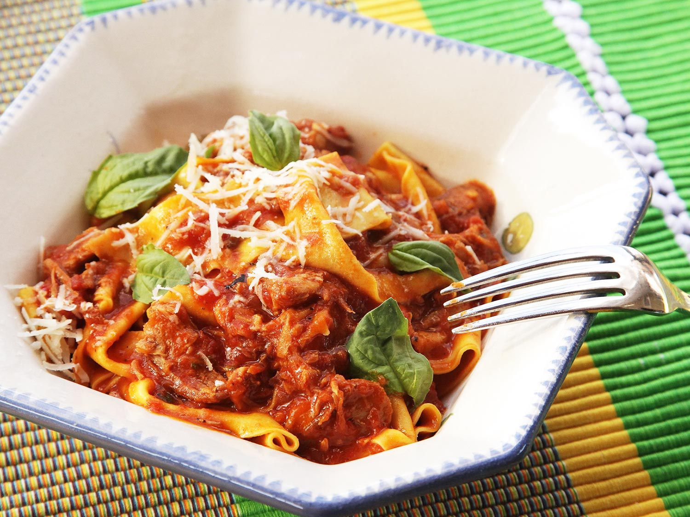

Bolognese Sauce

An easy weeknight meat sauce
Prep time: 10 minutes. Cook time: 60 minutes
This is an awesome weeknight pasta sauce that your girlfriend will love. It cooks quickly and uses mostly pantry staples. For the meat, ground italian sausage is ideal but feel free to improvise based on what's at hand.
I actually think this is more specifically a ragu, due to the addition of milk. Whatever you call it in Italy, I don't really care. I'm hungry and don't have any Italian friends.
Stolen from J. Kenji Lopez Alt's youtube channel
Ingredients
- 1 tbsp Olive Oil
- 1 lb Italian sausage
- 1 Onion, diced
- 1 Carrot, diced
- 2 Celery Ribs, diced
- Salt and fresh ground black pepper
- 3-6 Cloves Garlic, minced
- 1 cup dry red wine
- 1 (15.5 oz) can crushed or whole peeled San Marzano tomatoes, crushed by hand.
- 1 cup milk
- Fresh basil leaves, for garnish
- Optional: 1 tsp tomato paste, 1 pinch red pepper flakes, 1 tsp dried italian herbs
Instructions
- Heat oil in tall-sided saucepan until shimmering. Add meat and break up, cooking on medium heat until lightly browned, about 8 minutes.
- Add onions, carrot, and celery. Season with a pinch of salt and cook until veggies are softened, about 3 minutes
- Bonus step! Make some space in the center of the pan and splash a little olive oil within and allow it to heat up. Squirt in a tsp or so of tomato paste onto the oil, and sprinkle a pinch of red pepper flakes and italian herbs. After a minute or so, stir to combine the newly-created flavor bomb into the mixture
- Add garlic and cook until fragrant, about 30 seconds
- Add wine reduced by half, about 2-4 minutes, until liquid is reduced by half
- Add tomatoes and milk, bring to a boil, and reduce to a bare simmer. Simmer uncovered for an hour or more, stirring occasionally, until reduced to a thick and sexual sauce
For the pasta, opt for a shape with good structual integrity and surface area to accommodate the thickness you are bringing to the dinner table. Rigatoni is an easy win.
Return to main page